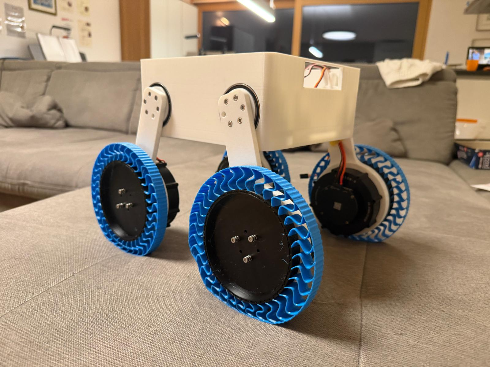
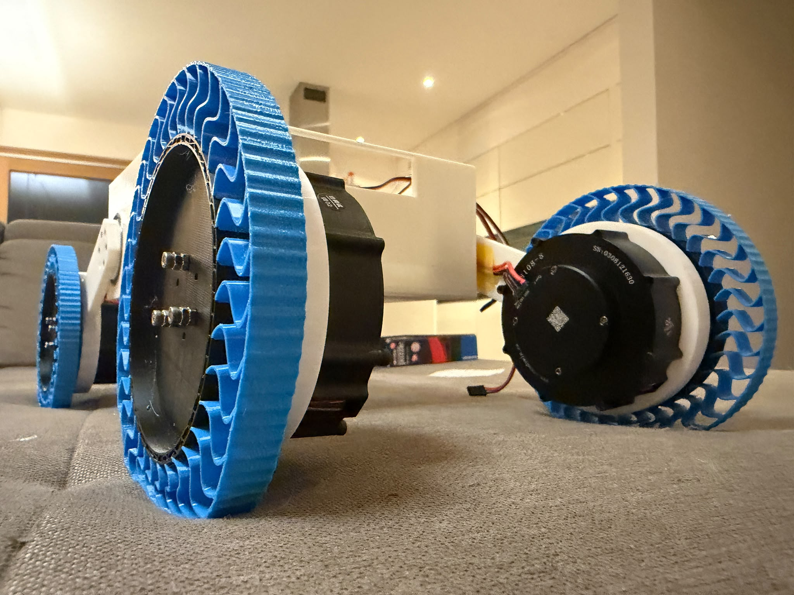
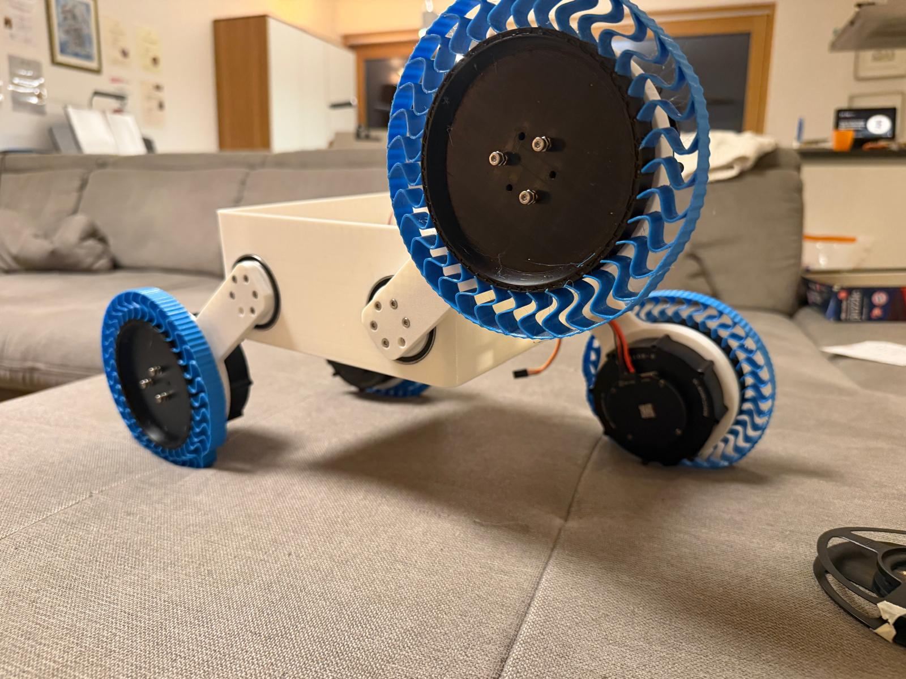
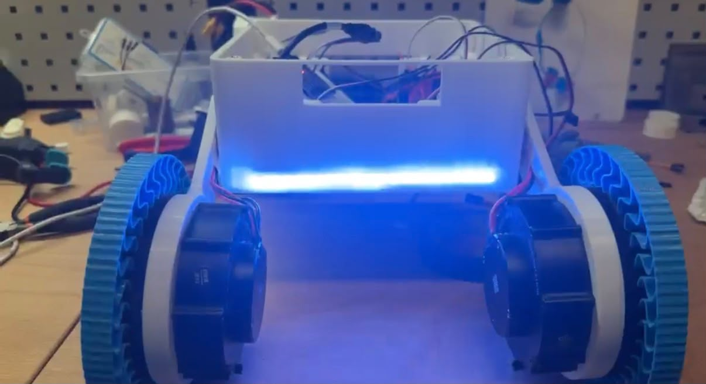

Future Club
Rover.
Im Future Club THI entwickeln wir einen mobilen Rover mit vier unabhängig beweglichen Achsarmen. Der Prototyp ist inzwischen mechanisch aufgebaut, die CAN-Kommunikation funktioniert und die Motoren lassen sich über einen Controller ansteuern. Damit beginnt jetzt die Phase, in der aus den einzelnen Baugruppen ein gezielt fahrbares und später autonomes Robotersystem wird.

Nach der Fehlersuche am CAN-System konnte ein defekter Transceiver als Ursache identifiziert und ersetzt werden. Die Kommunikation läuft jetzt stabil und die Motoren des Rovers lassen sich bereits per Controller ansteuern. Der nächste Meilenstein ist die vollständige, gezielte Steuerung der einzelnen Achsarme.
Vier unabhängig ansteuerbare Achsen mit eigener Lager- und Kabelführung.
Ein Schwerpunkt der bisherigen Arbeit lag auf der mechanischen Weiterentwicklung der vier Achsarme. Die einzelnen Achsen werden durch speziell ausgelegte Bauteile zusammengehalten: Zwei kreisförmige Platten werden miteinander verspannt und bilden die mechanische Aufnahme, während die Achse über ein Kugellager gelagert wird.
Die Arme verfügen außerdem über integrierte Kabelkanäle, sodass die Leitungen innerhalb der Konstruktion geführt werden können. Die CAD-Ansichten zeigen sowohl die Gesamtstruktur als auch den mechanischen Aufbau im Detail; die Tafel-Skizze ergänzt die zugrunde liegenden Konstruktionsüberlegungen.


Vom konstruierten Aufbau zum funktionsfähigen Rover-Prototyp.
Die mechanische Grundstruktur mit vier Achsarmen, Radmotoren und zentralem Gehäuse ist inzwischen praktisch aufgebaut. Die neuen Prototypenbilder zeigen den aktuellen Stand deutlich näher am späteren Gesamtsystem als die bisherigen CAD- und Aufbauphasen.


Die elektronische Architektur ist umgesetzt – inklusive funktionierendem CAN-Bus.
Zur Systemarchitektur gehören die getrennte Versorgung von Motoren und Feinelektronik, die Motorcontroller und die Kommunikation mit dem ESP32. Ein wichtiger technischer Meilenstein war die Inbetriebnahme des CAN-Busses. Nach systematischer Fehlersuche stellte sich ein defekter CAN-Transceiver als Ursache der Kommunikationsprobleme heraus; nach dem Austausch funktioniert die Verbindung zuverlässig.
Damit können Steuerbefehle an die Motoren übertragen werden. Diese Basis wird jetzt genutzt, um die Bewegungslogik für die vier Achsarme und die Fahrsteuerung weiter auszubauen.

Systemarchitektur
Alle Teile besitzen einen festen Platz. Die Trennung von Motorversorgung und Feinelektronik bildet die Grundlage für einen robusten weiteren Aufbau.
Die Motoren lassen sich jetzt über CAN mit einem Controller steuern.
Die zuvor problematische CAN-Kommunikation ist gelöst. Ursache war ein defekter Transceiver; mit dem Ersatztransceiver funktioniert die Verbindung zwischen ESP32 und den Motorcontrollern. Auf dieser Basis wurde eine erste Controller-Steuerung umgesetzt, mit der die Motoren direkt angesteuert werden können.
Der nächste Entwicklungsschritt ist eine vollständige Steuerungslogik: Die einzelnen Achsarme sollen gezielt über den Controller bewegt werden, damit der Rover unterschiedliche Fahr- und Kletterbewegungen ausführen kann. Anschließend folgt der erste Test auf einem Hindernisparcours.

Als Nächstes: Bewegungslogik, Hindernisparcours und anschließend ROS.
Beim nächsten Treffen soll die Controller-Steuerung so erweitert werden, dass jeder Achsarm gezielt angesteuert werden kann. Danach wird der Rover erstmals auf einem Hindernisparcours getestet. Auf dieser stabilen mobilen Plattform folgen Kamera und weitere Sensoren sowie der Raspberry Pi 5 als High-Level-Recheneinheit. Darauf aufbauend sollen ROS und später autonome Navigationsfunktionen integriert werden.
CAN + CONTROLLER
ErreichtMotoren lassen sich über den ESP32 und den Controller ansteuern.
ARMSTEUERUNG
Als NächstesGezielte Einzelsteuerung der vier Achsarme über den Controller.
HINDERNISPARCOURS
DanachFahr- und Bewegungsverhalten des Rovers unter realen Hindernissen testen.
SENSORIK + KAMERA
AusbauUmgebung erfassen und die Grundlage für höhere Roboterfunktionen schaffen.
PI 5 + ROS
AutonomieHigh-Level-Steuerung, ROS-Integration und später autonome Navigation.
Technische Entwicklung funktioniert nur mit guter Abstimmung im Team.
Parallel zur technischen Arbeit spielt die Organisation im Team eine wichtige Rolle. Für die Abstimmung nutzen wir unter anderem Discord- und WhatsApp-Kanäle, um Aufgaben, Fortschritte und nächste Entwicklungsschritte strukturiert zu koordinieren.
Dadurch werden nicht nur technische Inhalte aufgeteilt, sondern auch Teamleitungs- und Kommunikationsfähigkeiten sichtbar, die für ein laufendes Robotikprojekt entscheidend sind.

Vom mechanischen Konzept zum steuerbaren Rover – und weiter zur Autonomie.
Der Rover hat einen wichtigen Übergang erreicht: Mechanik, Elektronik und Kommunikation greifen erstmals praktisch ineinander. CAN-Bus und Controller-Steuerung funktionieren; als Nächstes werden die vier Achsarme gezielt steuerbar gemacht und das System auf einem Hindernisparcours erprobt. Danach folgen Sensorik, Kamera, Raspberry Pi 5 und ROS als Basis für autonome Funktionen.